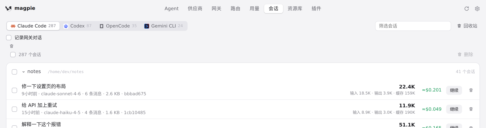
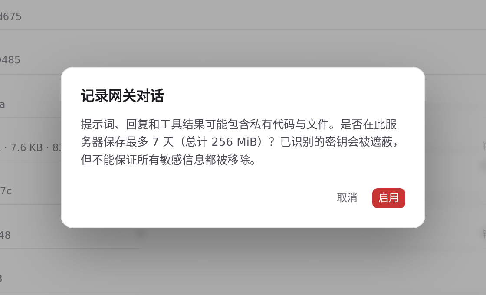
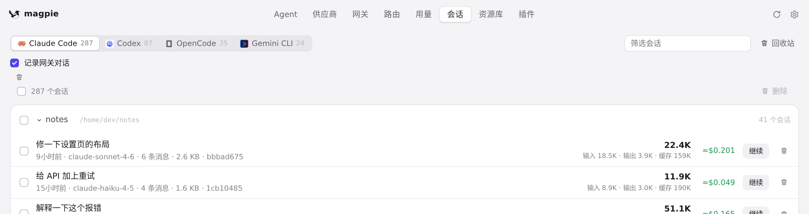
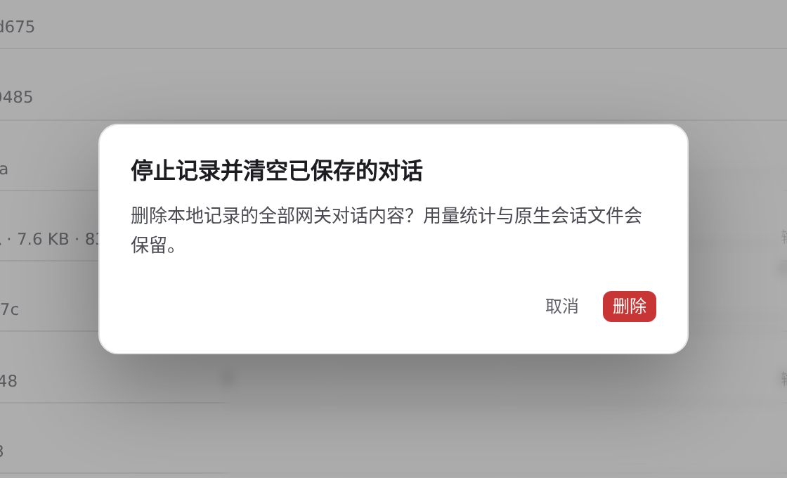
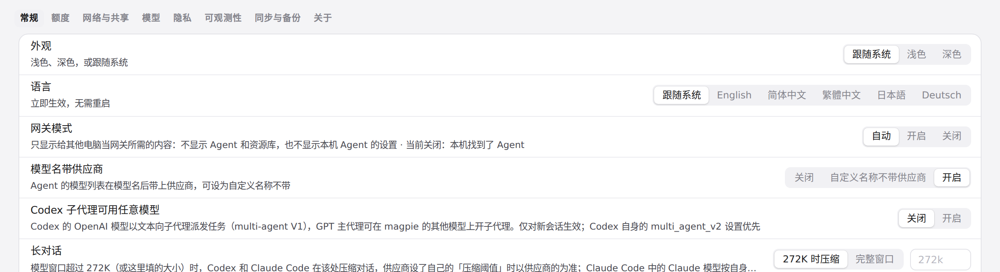
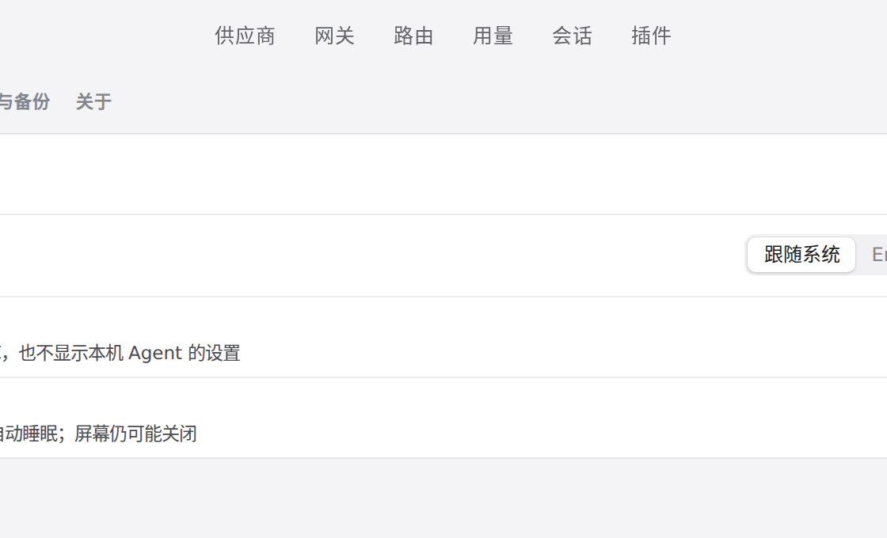

#1355 界面预览
commit 6a343ba · 回到 PR · 会话页顶部新增一个默认关闭的「记录网关对话」开关和一个清空按钮，开关与清空都先弹确认弹窗；网关账本会按会话聚合进会话列表，正文来源标注为网关记录；网关模式不再隐藏会话页，只隐藏 Agent 和资源库（连带设置里的说明文字也改了）。
红线是鼠标走过的轨迹，红色圆环是一次点击；底部文字是这一步在做什么。空格暂停，← → 逐段查看。

会话页的记录开关与确认弹窗 · 会话页顶部的记录开关，默认关闭

会话页的记录开关与确认弹窗 · 开启记录前的确认弹窗

会话页的记录开关与确认弹窗 · 确认后的记录开关

会话页的记录开关与确认弹窗 · 清空前的确认弹窗，尚未确认

网关模式保留会话标签 · 设置 › 通用里的网关模式说明

网关模式保留会话标签 · 切到「开启」后的标签栏